Selecting the best equation to fit to our experimental data may require some experience. What should we do when we have no literature information? We are not mathematicians and our approach to model building is often emipirical. I.e., we look at biological processes, plot the data and note that they follow a certain pattern. For example, we could have observed that the response of a plant species to the dose of some toxic substance is S-shaped. Therefore, we need an S-shaped function to fit to our data, but … how do we select the right equation?
I thought that it might be useful to list the most widespread equations, together with their main properties and the biological meaning of their parameters. Of course, I should not forget that we are interested in those equations because we want to fit them! Therefore, I will also give the corresponding R functions, at least, I will give the ones I use most often.
One problem with nonlinear regression is that it works iteratively: we need to provide initial guesses for model parameters and the algorithm adjusts them step by step, until it (hopefully) converges on the approximate least squares solution. To my experience, providing initial guesses may be troublesome. Therefore, it is very convenient to use R functions including the appropriate self-starting routines, which can greatly simplify the fitting process.
Several self-starters can be found in the ‘drc’ package, which can be used with the ‘drm()’ nonlinear regression facility. Other self starters are provided in the ‘nlme’ package, to be used with the ‘nls()’, ‘nlsList()’ and ‘nlme()’ nonlinear regression facilities. I have added a few self starters in the ‘aomisc’ package. By doing this work, I gave myself the following ‘rule’: if an equation is named ‘eqName’, ‘eqName.fun’ is the R function coding for that equation (that we can use, e.g., for plotting), ‘NLS.eqName’ is the self-starter for ‘nls()’ and ‘DRC.eqName’ is the self-starter for ‘drm()’.
In this tutorial, we will use some of the datasets available in the ‘aomisc’ package.
Before starting this tutorial, let’s load the necessary packages.
library(drc)
library(nlme)
library(aomisc)Curves can be easily classified by their shape, which is very helpful to select the correct one for the process under study. We have:
Polynomials are the most flexible tool to describe biological processes. They are simple and, although curvilinear, they are linear in the parameters and can be fitted by using linear regression. One disadvantage is that they cannot describe asymptotic processes, which are very common in biology. Furthermore, they are prone to overfitting, as we may be tempted to add terms to improve the fit, with little care for biological realism.
Nowadays, thanks to the wide availability of nonlinear regression algorithms, the use of polynomials has sensibly decreased; linear or quadratic polynomials are mainly used when we want to approximate the observed response within a narrow range of a quantitative predictor. On the other hand, higher order polynomials are very rarely seen, in practice.
Obviously, this is not a curve, although it deserves to be mentioned here. The equation is:
\[Y = b_0 + b_1 \, X\]
where \(b_0\) is the value of \(Y\) when \(X = 0\), \(b_1\) is the slope, i.e. the increase/decrease in \(Y\) for a unit-increase in \(X\). The Y increases as \(X\) increases when \(b_1 > 0\), otherwise it decreases.
The equation is:
\[Y = b_0 + b_1\, X + b_2 \, X^2\]
where \(b_0\) is the value of \(Y\) when \(X = 0\), while \(b_1\) and \(b_2\), taken separately, lack a clear biological meaning. However, it is useful to consider that the first derivative is:
D(expression(a + b*X + c*X^2), "X")## b + c * (2 * X)which measures the increase/decrease in \(Y\) for a unit-increase in \(X\). We see that such an increase/decrease is not constant, but it changes according to the level of \(X\). The stationary point is \(X_m = - b_1 / 2 b_2\); it is a maximum when \(b_2 > 0\), otherwise it is a minimum.
At the maximum/minimum, the response is:
\[Y_m = \frac{4\,b_0\,b_2 - b_1^2}{4\,b_2}\]
Polynomials in R are fit by using the linear model function ‘lm()’. Although this is not efficient, in a couple of cases I found myself in the need of fitting a polynomial by using the ‘nls()’ o ‘drm()’ functions. For these unusual cases, one can use the ‘NLS.Linear()’, NLS.poly2(), ‘DRC.Linear()’ and DRC.Poly2() self-starting functions, as available in the ‘aomisc’ package.
Let’s jump into the nonlinear realm. Concave/convex curves describe nonlinear relationships, often with asymptotes and no inflection points. We will list the most used, here.
The exponential equation describes an increasing/decreasing trend, with constant relative rate. The most common parameterisation is:
\[ Y = a e^{k X}\]
Other possible parameterisations are:
\[ Y = a b^X = e^{d + k X}\]
The above parameterisations are equivalent, as proved by setting \(b = e^k\) e \(a = e^d\):
\[a b^X = a (e^k)^{X} = a e^{kX}\]
and:
\[a e^{kX} = e^d \cdot e^{kX} = e^{d + kX}\]
The meaning of parameters is clear: \(a\) is the value of \(Y\) when \(X = 0\), while \(k\) represents the relative increase/decrease of \(Y\) for a unit increase of X. This is easily seen, if we calculate the first derivative of the exponential function:
D( expression(a * exp(k * X)), "X")## a * (exp(k * X) * k)From the above, we derive that the slope of the tangent line through X is $ k , Y$. Therefore, Y increases by an amount that is proportional to its actual level. Such an amount is positive if \(k > 0\) (exponential growth), while it is negative when \(k < 0\) (exponential decay). The exponential curve is used to describe the growth of a population in unlimiting environmental conditions, or to describe the degradation of xenobiotics in the environment (first-order degradation kinetic).
The exponential function is nonlinear in \(k\) and needs to be fitted by using ‘nls()’ or ‘drm()’. It is possible to make profit of the self-starting routines in ‘NLS.expoGrowth()’, ‘NLS.expoDecay()’, ‘DRC.expoGrowth()’ and ‘DRC.expoDecay()’. All these functions are available in the ‘aomisc’ package. Let’s see an example of fitting (it uses the degradation dataset in the ‘aomisc’ package).
data(degradation)
model <- drm(Conc ~ Time, fct = DRC.expoDecay(),
data = degradation)
summary(model)##
## Model fitted: Exponential Decay Model (2 parms)
##
## Parameter estimates:
##
## Estimate Std. Error t-value p-value
## init:(Intercept) 99.6349312 1.4646680 68.026 < 2.2e-16 ***
## k:(Intercept) 0.0670391 0.0019089 35.120 < 2.2e-16 ***
## ---
## Signif. codes: 0 '***' 0.001 '**' 0.01 '*' 0.05 '.' 0.1 ' ' 1
##
## Residual standard error:
##
## 2.621386 (22 degrees of freedom)plot(model, log="")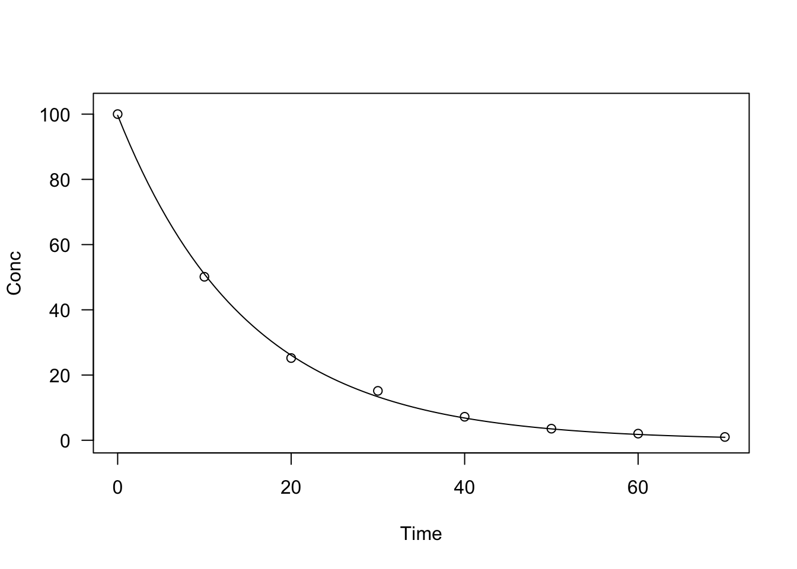
The ‘drc’ package also contains the function ‘EXD.2()’, that fits an exponential decay model, with a slightly different parameterisation:
\[ Y = d \exp(-x/e) \]
where \(d\) is the same as \(a\) in the model above and \(e = 1/k\).
For all the forementioned exponential decay equations \(Y \rightarrow 0\) as \(X \rightarrow \infty\). The function ‘EXD.3()’ in the ‘drc’ package also includes a lower asymptote \(c \neq 0\), that may turn out useful to describe exponential decays where the measured amount cannot drop down to 0.
\[ Y = c + (d -c) \exp(-x/e) \]
I’ll show an example of both EXD.2 (blue curve) and EXD.3 (red curve)
curve(EXD.fun(x, 0, 100, -1/0.05), col="blue", xlab = "X",
ylab = "Y", main = "Exponential decay",
xlim = c(0, 100), ylim = c(0,100))
curve(EXD.fun(x, 20, 100, -1/0.05), col="red", add = T)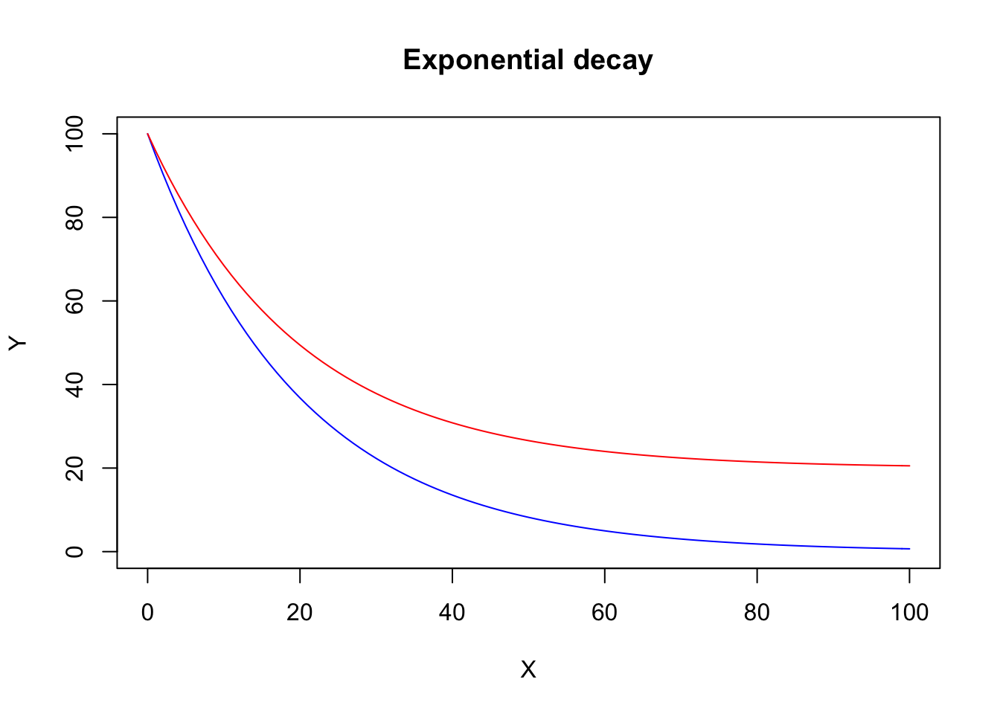
The asymptotic regression model describes a limited growth, where \(Y\) approaches an horizontal asymptote as \(X\) tends to infinity. This equation is used in several different parameterisations and it is also known as Monomolecular Growth, Mitscherlich law or von Bertalanffy law.
Due to its biological meaning, the most widespread parameterisation is:
\[Y = a - (a - b) \, \exp (- c X)\] where \(a\) is the maximum attainable \(Y\), \(b\) is \(Y\) at \(x = 0\) and \(c\) is proportional to the relative rate of Y increase while X increases. Indeed, we can see that the first derivative is:
D(expression(a - (a - b) * exp (- c * X)), "X")## (a - b) * (exp(-c * X) * c)that is:
\[ Y' = c \, (a - Y)\]
We see that the relative rate of growth is not constant (as in the exponential model), but it is maximum when \(Y = 0\) and decreases as \(Y\) increases.
This model can be fit with R by using the self starter functions ‘NLS.asymReg()’ and DRC.asymReg(), in the ‘aomisc’ package. The ‘drc’ package contains the function AR.3(), that is a similar parameterisation where \(c\) is replaced by \(e = 1/c\). The ‘nlme’ package also contains an alternative parameterisation named ‘SSasymp()’, where \(c\) is replaced by \(\phi_3 = \log(c)\).
Let’s simulate an example.
set.seed(1234)
X <- c(1, 3, 5, 7, 9, 11, 13, 20)
a <- 20; b <- 5; c <- 0.3
Ye <- asymReg.fun(X, a, b, c)
epsilon <- rnorm(8, 0, 0.5)
Y <- Ye + epsilon
model <- drm(Y ~ X, fct = DRC.asymReg())
plot(model, log="", main = "Asymptotic regression")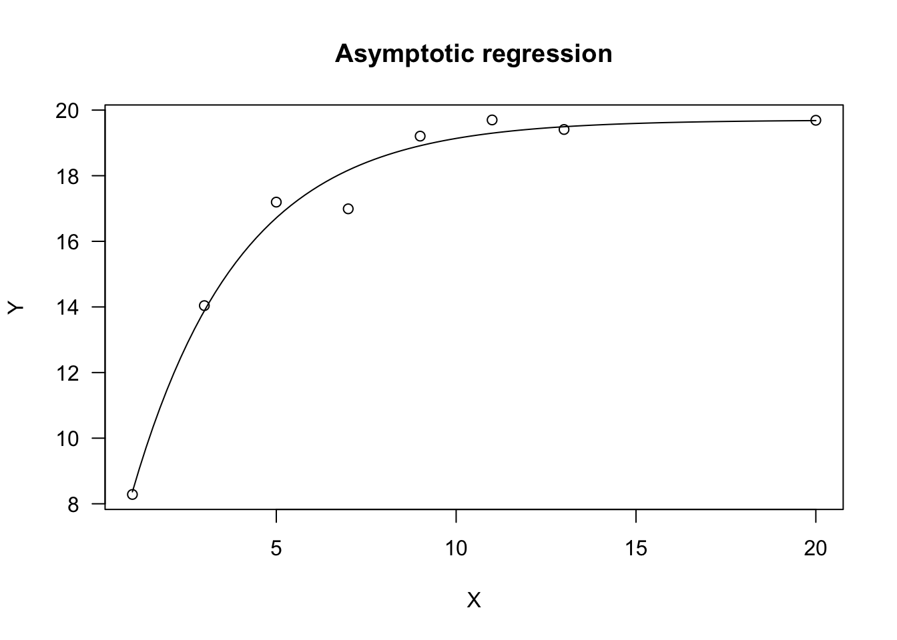
If we take the above equation and add the constraint that \(b = 0\), we get the following equation, that is often known as ‘negative exponential equation’:
\[Y = a [1 - \exp (- c X) ]\]
This equation has a similar shape to the asymptotic regression, but \(Y = 0\) when \(X = 0\) (the curve passes through the origin). It is often used to model the absorbed Photosintetically Active Radiation (\(Y = PAR_a\)) as a function of incident PAR (\(a = PAR_i\)), Leaf Area Index (\(X = LAI\)) and the extinction coefficient (\(c = k\)).
This model can be fit with R by using the self starter functions ‘NLS.negExp()’ and DRC.negExp(), in the ‘aomisc’ package. The ‘drc’ package contains the function AR.2(), where \(c\) is replaced by \(e = 1/c\). The ‘nlme’ package also contains an alternative parameterisation, named ‘SSasympOrig()’, where \(c\) is replaced by \(\phi_3 = \log(c)\).
The power curve is also known as Freundlich equation or allometric equation and the most common parameterisation is:
\[Y = a \, X^b\]
This curve is perfectly equivalent to an exponential curve on the logarithm of \(X\). Indeed:
\[a\,X^b = a\, e^{\log( X^b )} = a\,e^{b \, \log(x)}\]
This curve does not have an asymptote for \(X \rightarrow \infty\). The slope (first derivative) is:
D(expression(a * X^b), "X")## a * (X^(b - 1) * b)We see that both parameters relate to the slope of the curve and \(b\) dictates its shape. If \(0 <- b < 1\), Y increases as X increases and the curve is convex up. This is used, e.g., to model the number of plant species as a function of sampling area (Muller-Dumbois method).
data(speciesArea)
model <- drm(numSpecies ~ Area, fct = DRC.powerCurve(),
data = speciesArea)
summary(model)##
## Model fitted: Power curve (Freundlich equation) (2 parms)
##
## Parameter estimates:
##
## Estimate Std. Error t-value p-value
## a:(Intercept) 4.348404 0.337197 12.896 3.917e-06 ***
## b:(Intercept) 0.329770 0.016723 19.719 2.155e-07 ***
## ---
## Signif. codes: 0 '***' 0.001 '**' 0.01 '*' 0.05 '.' 0.1 ' ' 1
##
## Residual standard error:
##
## 0.9588598 (7 degrees of freedom)plot(model, log="", main = "Power curve (b = 0.33)")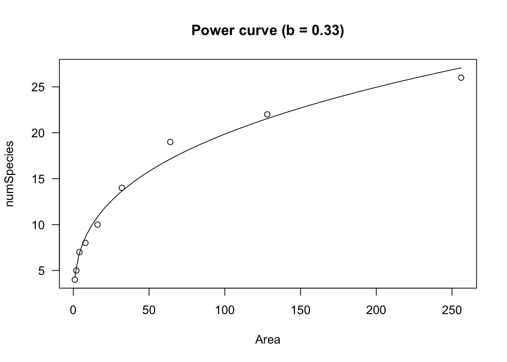
If \(b < 0\), the curve is concave up and \(Y\) decreases as \(X\) increases.
curve(powerCurve.fun(x, coef(model)[1], -coef(model)[2]),
xlab = "X", ylab = "Y", main = "Power curve (b = - 0.33)")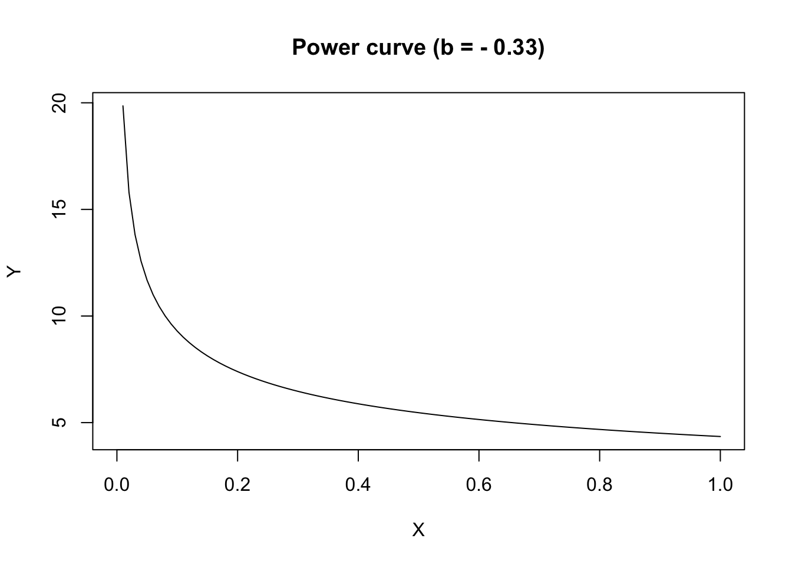
If \(b > 1\) is negative, the curve is concave up and \(Y\) increases as \(X\) increases.
curve(powerCurve.fun(x, coef(model)[1], 2),
xlab = "X", ylab = "Y", main = "Power curve (b = 2)")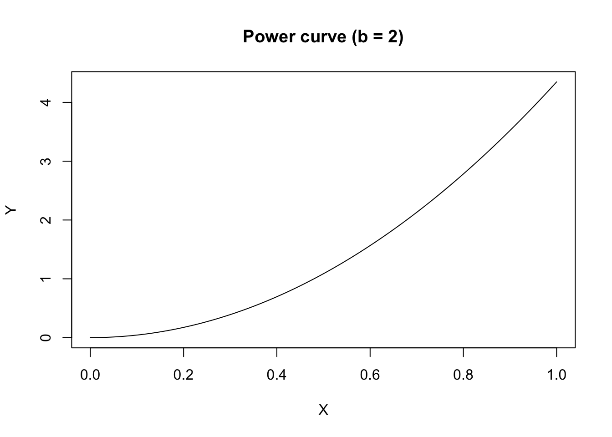
This is indeed a linear model on log-transformed \(X\):
\[y = a + b \, \log(X)\]
Due to the logarithm, \(X\) must be $ > 0$. The parameter \(b\) dictates the shape, as in the exponential equation, Indeed, if \(b > 0\), the curve is convex up and \(Y\) increases as \(X\) increases. If \(b < 0\), the curve is concave up and \(Y\) decreases as \(X\) increases.
The logarithmic equation can be fit by using ‘lm()’. If necessary, it can also be fit by using ‘nls()’ and ‘drm()’; the self-starting functions ‘NLS.logCurve()’ and ‘DRC.logCurve()’ are available within the ‘aomisc’ package. We show some simulated data as examples.
#b is positive
set.seed(5678)
X <- c(1,2,4,5,7,12)
a<-2; b<- 0.5
Ye <- a + b*log(X)
res <- rnorm(6, 0, 0.1)
Y <- Ye + res
model <- lm(Y ~ log(X) )
summary(model)##
## Call:
## lm(formula = Y ~ log(X))
##
## Residuals:
## 1 2 3 4 5 6
## -0.025947 0.013207 0.050827 -0.011989 -0.008408 -0.017690
##
## Coefficients:
## Estimate Std. Error t value Pr(>|t|)
## (Intercept) 1.99653 0.02494 80.06 1.46e-07 ***
## log(X) 0.45088 0.01580 28.54 8.97e-06 ***
## ---
## Signif. codes: 0 '***' 0.001 '**' 0.01 '*' 0.05 '.' 0.1 ' ' 1
##
## Residual standard error: 0.03146 on 4 degrees of freedom
## Multiple R-squared: 0.9951, Adjusted R-squared: 0.9939
## F-statistic: 814.7 on 1 and 4 DF, p-value: 8.967e-06model <- drm(Y ~ X, fct = DRC.logCurve() )
summary(model)##
## Model fitted: Linear regression on log-transformed x (2 parms)
##
## Parameter estimates:
##
## Estimate Std. Error t-value p-value
## a:(Intercept) 1.996534 0.024939 80.058 1.459e-07 ***
## b:(Intercept) 0.450883 0.015797 28.543 8.967e-06 ***
## ---
## Signif. codes: 0 '***' 0.001 '**' 0.01 '*' 0.05 '.' 0.1 ' ' 1
##
## Residual standard error:
##
## 0.03145785 (4 degrees of freedom)plot(model, log="", main = "Logarithmic regression (b > 0)")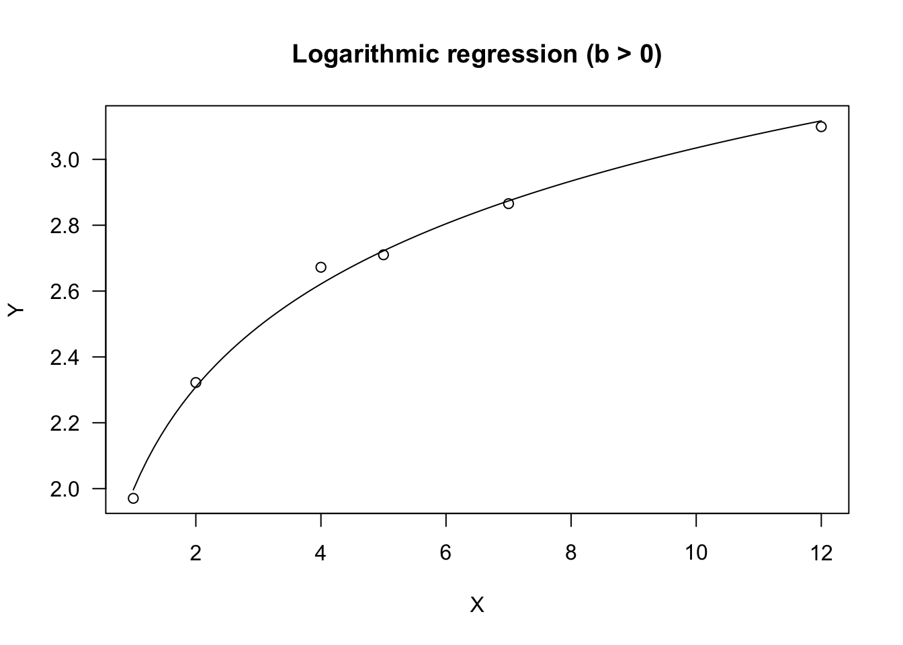
#b is negative
X <- c(1,2,4,5,7,12)
a <- 2; b <- -0.5
Ye <- a + b*log(X)
res <- rnorm(6, 0, 0.1)
Y <- Ye + res
model <- drm(Y ~ X, fct = DRC.logCurve() )
summary(model)##
## Model fitted: Linear regression on log-transformed x (2 parms)
##
## Parameter estimates:
##
## Estimate Std. Error t-value p-value
## a:(Intercept) 2.115759 0.103920 20.3595 3.437e-05 ***
## b:(Intercept) -0.569125 0.065826 -8.6459 0.0009843 ***
## ---
## Signif. codes: 0 '***' 0.001 '**' 0.01 '*' 0.05 '.' 0.1 ' ' 1
##
## Residual standard error:
##
## 0.1310851 (4 degrees of freedom)plot(model, log="", main = "Logarithmic regression (b < 0)")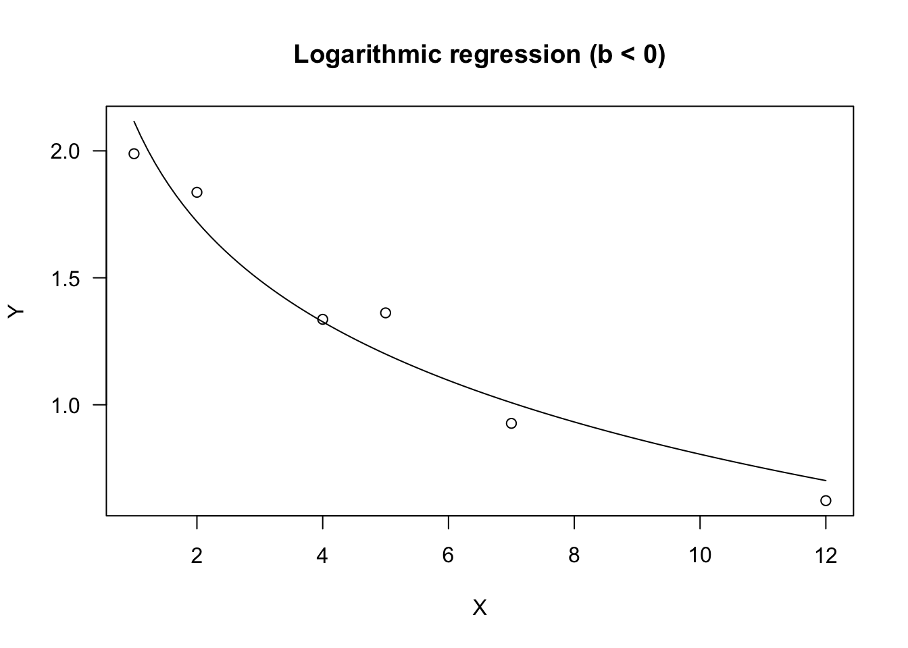
This is a rectangular hyperbola, often parameterised as:
\[Y = \frac{a \, X} {b + X}\]
This curve is convex up and \(Y\) increases as \(X\) increases, up to a plateau level. The parameter \(a\) represents the higher asymptote (for \(X \rightarrow \infty\)), while \(b\) is the X value giving a response equal to \(a/2\). Indeed, it is easily shown that:
\[\frac{a}{2} = \frac{a\,X_{50} } {b + X_{50} }\]
which leads to \(b = x_{50}\).
The slope (first derivative) is:
D(expression( (a*X) / (b + X) ), "X")## a/(b + X) - (a * X)/(b + X)^2From there, we can see that the initial slope (at \(X = 0\)) is $i = a/b $.
In R, this model can be fit by using ‘nls()’ and the self starting functions ‘SSmicmen()’, within the package ‘nlme’. If we prefer a ‘drm()’ fit, we can use the ‘MM.2()’ function in the package ‘drc’.
set.seed(1234)
X <- c(3, 5, 7, 22, 28, 39, 46, 200)
a <- 15; b <- 0.5
Ye <- as.numeric( SSmicmen(X, a, b) )
res <- rnorm(8, 0, 0.1)
Y <- Ye + res
#nls fit
model <- nls(Y ~ SSmicmen(X, a, b))
summary(model)##
## Formula: Y ~ SSmicmen(X, a, b)
##
## Parameters:
## Estimate Std. Error t value Pr(>|t|)
## a 14.97166 0.06057 247.17 2.96e-13 ***
## b 0.50207 0.03345 15.01 5.51e-06 ***
## ---
## Signif. codes: 0 '***' 0.001 '**' 0.01 '*' 0.05 '.' 0.1 ' ' 1
##
## Residual standard error: 0.1196 on 6 degrees of freedom
##
## Number of iterations to convergence: 0
## Achieved convergence tolerance: 3.043e-06#drm fit
model <- drm(Y ~ X, fct = MM.2())
summary(model)##
## Model fitted: Michaelis-Menten (2 parms)
##
## Parameter estimates:
##
## Estimate Std. Error t-value p-value
## d:(Intercept) 14.971733 0.060492 247.499 2.936e-13 ***
## e:(Intercept) 0.502126 0.033359 15.052 5.418e-06 ***
## ---
## Signif. codes: 0 '***' 0.001 '**' 0.01 '*' 0.05 '.' 0.1 ' ' 1
##
## Residual standard error:
##
## 0.1195748 (6 degrees of freedom)plot(model, log="", main = "Michaelis-Menten equation")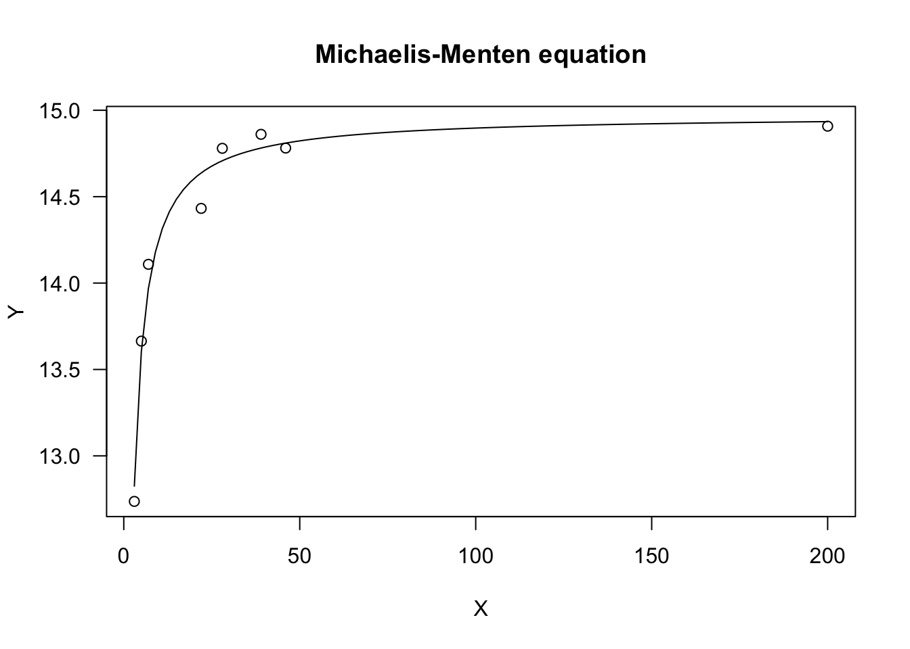
The ‘drc’ package also contains the self starting function ‘MM.3()’, where \(Y\) is allowed to be equal to \(c \neq 0\), when \(X = 0\).
Weed-crop competition studies make use of a reparameterised Michaelis-Menten model. Indeed, the initial slope of a Michaelis-Menten can be assumed as a measure of competition, that is the reduction in yield (Y) when the first weed is added to the system. Therefore, the Michaelis-Methen model has been reparameterised to include \(i = a/b\) as an explicit parameter. The reparameterised equation is:
\[Y = \frac{i \, X}{1 + \frac{i \, X}{a}}\]
This model can be used to describe yield losses as a function of weed density. It can be fit by using the self starting functions ‘NLS.YL()’ or ‘DRC.YL()’ in the ‘aomisc’ package. Usually, competion studies produce yield data and, therefore, yield losses (in percentage) need to be calculated by using the weed-free yield and the following equation:
\[Y_L = \frac{Y_{WF} - Y_w }{Y_{WF} } \times 100\]
where \(Y_W\) is the observed yield and \(Y_{WF}\) is the weed-free yield. We show an example relating to sunflower grown at increasing densities of the weed Sinapis arvensis.
data(competition)
Ywf <- mean( competition$Yield[competition$Dens == 0] )
competition$YL <- ( Ywf - competition$Yield ) / Ywf * 100
#nls fit
model <- nls(YL ~ NLS.YL(Dens, a, i), data = competition)
summary(model)##
## Formula: YL ~ NLS.YL(Dens, a, i)
##
## Parameters:
## Estimate Std. Error t value Pr(>|t|)
## a 8.207 1.187 6.914 1.93e-08 ***
## i 75.048 2.353 31.894 < 2e-16 ***
## ---
## Signif. codes: 0 '***' 0.001 '**' 0.01 '*' 0.05 '.' 0.1 ' ' 1
##
## Residual standard error: 6.061 on 42 degrees of freedom
##
## Number of iterations to convergence: 2
## Achieved convergence tolerance: 2.685e-06#drc fit
model <- drm(YL ~ Dens, fct = DRC.YL(), data = competition)
summary(model)##
## Model fitted: Yield-Loss function (Cousens, 1985) (2 parms)
##
## Parameter estimates:
##
## Estimate Std. Error t-value p-value
## i:(Intercept) 8.2068 1.1715 7.0056 1.427e-08 ***
## A:(Intercept) 75.0492 2.3298 32.2133 < 2.2e-16 ***
## ---
## Signif. codes: 0 '***' 0.001 '**' 0.01 '*' 0.05 '.' 0.1 ' ' 1
##
## Residual standard error:
##
## 6.060578 (42 degrees of freedom)plot(model, log="", main = "Yield loss function",
xlab = "Weed density", ylab = "Yield")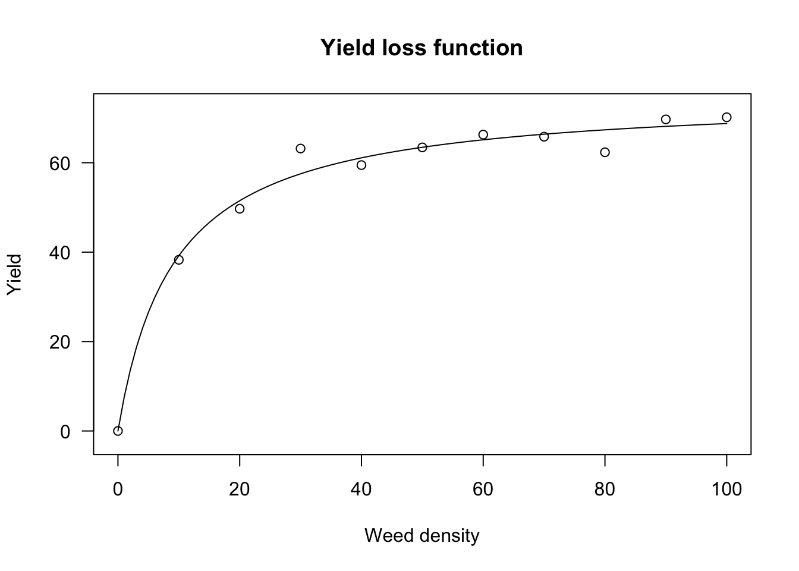
The above fit constrains the yield loss to be 0 when weed density is 0. This is logical, but, it has the important consequence that the weed-free yield is constrained to be equal to the observed weed-free yield, which is not realistic. Therefore, we can reparameterise the yield-loss function, in order to use the observed yield as the dependent variable.
Indeed, from the above equation we derive:
\[Y_W = Y_{WF} - \frac{Y_L }{100}Y_{WF} = Y_{WF} \left( {1 - \frac{Y_L }{100}} \right)\]
and so:
\[Y_W = Y_{WF} \left( 1 - \frac{i\, X}{100 \left( 1 + \frac{i \, X}{a} \right) } \right)\]
This function can be fit with ‘drm()’, by using the ‘DRC.cousens85()’ self starting function.
model <- drm(Yield ~ Dens, fct = DRC.cousens85(),
data = competition)
summary(model)##
## Model fitted: Yield-Weed Density function (Cousens, 1985) (3 parms)
##
## Parameter estimates:
##
## Estimate Std. Error t-value p-value
## YWF:(Intercept) 30.47211 0.92763 32.8493 < 2.2e-16 ***
## i:(Intercept) 8.24038 1.36541 6.0351 3.857e-07 ***
## a:(Intercept) 75.07312 2.40366 31.2328 < 2.2e-16 ***
## ---
## Signif. codes: 0 '***' 0.001 '**' 0.01 '*' 0.05 '.' 0.1 ' ' 1
##
## Residual standard error:
##
## 1.866311 (41 degrees of freedom)plot(model, log="", main = "Yield-Weed density function")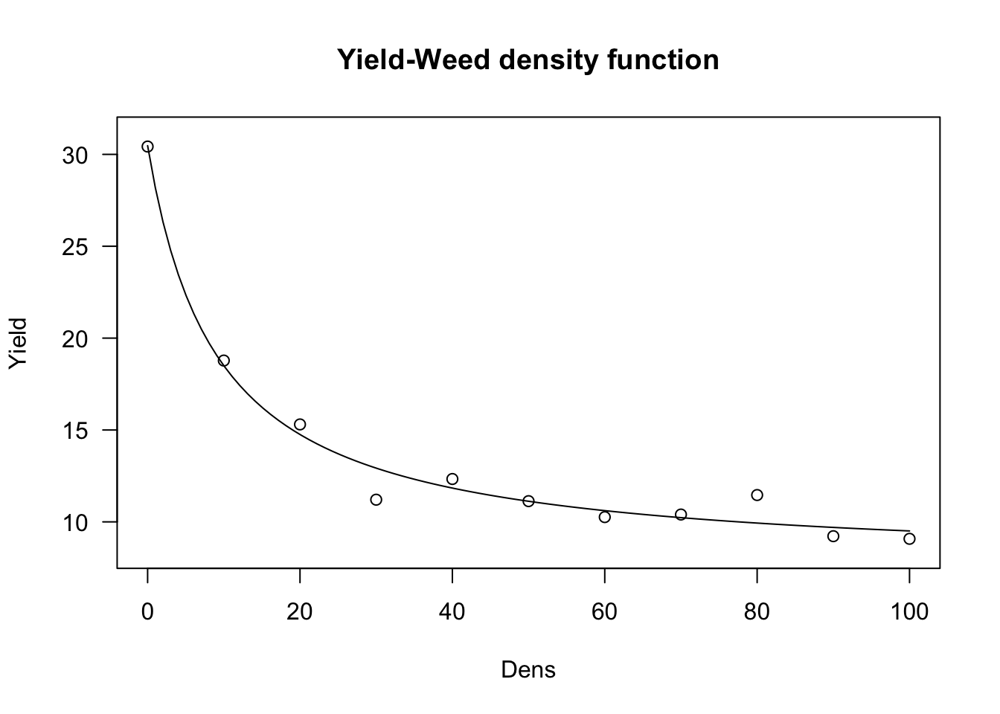
Sygmoidal curves are S-shaped and they may be increasing, decreasing, symmetric or non-simmetric around the inflection point. They are parameterised in countless ways, which may be often confusing. Therefore, we will show a common parameterisation, that is very useful in biological terms.
The logistic curve derives from the cumulative logistic distribution function; the curve is symmetric around the inflection point and it it may be parameterised as:
\[Y = c + \frac{d - c}{1 + exp(b (X - e))}\]
where \(d\) is the higher asymptote, \(c\) is the lower asymptote, \(e\) is \(X\) value producing a response half-way between \(d\) and \(c\), while \(b\) is the slope around the inflection point. The parameter \(b\) can be positive or negative and, consequently, \(Y\) may increase or decrease as \(X\) increases.
The above function is known as four-parameter logistic. If necessary, contraints can be put on parameter values, i.e. \(c\) can be constrained to 0 (three-parameter logistic). Furthermore, \(d\) can be also contrained to 1 (two-parameter logistic).
The four- and three-parameter logistic curves can be fit by ‘nls()’, respectively with the self-starting functions ‘SSfpl()’ and ‘SSlogis’ (‘nlme’ package). In these functions, \(b\) is replaced by \(scal = -1/b\).
With ‘drm()’, we can use the self-starting functions ‘L.4()’ and ‘L.3()’. The ‘L.2()’ function has been included in the ‘aomisc’ package.
Logistic functions are very useful, e.g., for plant growth studies.
data(beetGrowth)
model <- drm(weightFree ~ DAE, fct = L.3(), data = beetGrowth)
summary(model)##
## Model fitted: Logistic (ED50 as parameter) with lower limit fixed at 0 (3 parms)
##
## Parameter estimates:
##
## Estimate Std. Error t-value p-value
## b:(Intercept) -0.179393 0.039059 -4.5929 0.0003519 ***
## d:(Intercept) 34.532001 1.676430 20.5985 2.057e-12 ***
## e:(Intercept) 52.384788 1.580269 33.1493 1.838e-15 ***
## ---
## Signif. codes: 0 '***' 0.001 '**' 0.01 '*' 0.05 '.' 0.1 ' ' 1
##
## Residual standard error:
##
## 2.970191 (15 degrees of freedom)plot(model, log="", main = "Logistic function")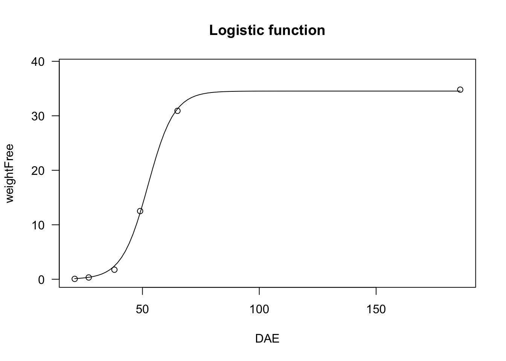
The Gompertz curve is parameterised in very many ways. We favour a parameterisation that resambles the one used for the logistic function:
\[ Y = c + (d - c) \exp \left\{- \exp \left[ b \, (X - e) \right] \right\} \]
were the parameters have the same meaning as those in the logistic function. The difference is that this curve is not symmetric around the inflection point. As for the logistic, we can have a four-, three- and two-parameter Gompertz functions, which can be fit by using ‘drm()’ and, respectively the ‘G.4()’, ‘G.3()’ and ‘G.2()’ sef-starters. The three-parameter Gompertz can also be fit with ‘nls()’, by using the ‘SSGompertz()’ self-starter in the ‘nlme’ package, although this is a different parameterisation.
We have seen that, with respect to the logistic, the Gompertz shows a longer lag at the beginning, but raises steadily afterwards. We could describe a different pattern by changing the Gompertz function as follows:
\[ Y = c + (d - c) \left\{ 1 - \exp \left\{- \exp \left[ b \, (X - e) \right] \right\} \right\} \]
The self-starters for this function are not yet available, at least to the best of my knowledge. Also, I am not aware of a particular name for this function.
It may be useful to compare the three logistic functions in a graph, to see the differences in terms of asimmetry/simmetry. The logistic function is black, the Gompertz function is red and the reparameterised Gompertz is blue.
d <- 10; c <- 2; e <- 7; b <- - 0.5
curve( G.fun(x, b, c, d, e), xlim = c(0, 20) , xlab="X",
ylab = "Y", col = "red", main = "Sygmoidal functions")
curve( L.fun(x, b, c, d, e), add = T, col = "black" )
curve( E.fun(x, b, c, d, e), add = T, col = "blue" )
legend(12, 6, legend = c("logistic", "Gompertz", "alt. Gompertz"),
lty = c(1,1,1), col = c("black", "red", "blue"))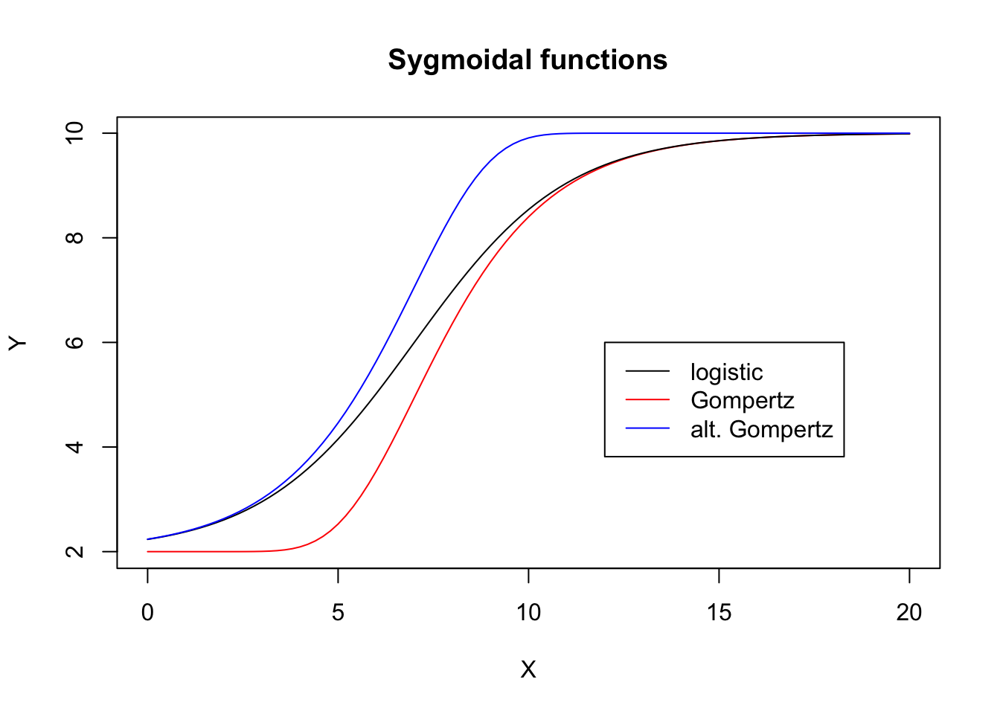
In biology, the measured amount are often strictly positive (time, weight, height, counts). Therefore, using a function that is defined also for non-positive numbers may seem unrealistic. Therefore, it is often preferable to use functions where the independent variable \(X\) is contrained to be positive. All the above described sygmoids may be based on the logarithm of X, which gives us more realistic models.
In many applications, the sigmoidal response curve is symmetric on the logarithm of x, which requires a log-logistic curve (a log-normal curve would be practically equivalent, but it is used far less often). For example, in biologic assays (but also in germination assays), the log-logistic curve is defined as follows:
\[Y = c + \frac{d - c}{1 + \exp \left\{ b \left[ \log(X) - \log(e) \right] \right\} } \]
the parameters have the very same meanng as the logistic equationn given above. It is easy to see that the above equation is equivalent to:
\[Y = c + \frac{d - c}{1 + \left( \frac{X}{e} \right)^b}\]
Another possible parameterisation is the so-called Hill function:
\[ Y = \frac{a \, X^b}{ X^b + e^b} \]
Indeed:
\[ \frac{a \, X^b}{ X^b + e^b} = \frac{a}{ \frac{X^b}{X^b} + \frac{c^b}{X^b}} = \frac{a}{ 1 + \left( \frac{c}{X} \right)^b} = \frac{a}{ 1 + \left( \frac{c}{X} \right)^b} \]
Log-logistic functions are used for crop growth, seed germination and bioassay work and they can have the same constraints as the logistic function. The four-parameter logistic is available as ‘LL.4()’ in the ‘drc’ package and as ‘SSfpl()’ in the ‘nlme’ package. This latter function replaces \(b\) with \(scal = 1/b\). Also in ‘drc’, we have ‘LL.3()’ (three-parameter logistic, with \(c = 0\)) and ‘LL.2()’ (two-parameter logistic, with \(d = 1\) and \(c = 0\)). In ‘nlme’ we have ‘SSlogis()’, that is a three-parameter logistic with \(scal = 1/b\).
We show an example of a log-logistic fit, relating to a bioassay with Brassica rapa treated at increasing dosages of an herbicide.
data(brassica)
model <- drm(FW ~ Dose, fct = LL.4(), data = brassica)
summary(model)##
## Model fitted: Log-logistic (ED50 as parameter) (4 parms)
##
## Parameter estimates:
##
## Estimate Std. Error t-value p-value
## b:(Intercept) 1.45113 0.24113 6.0181 1.743e-06 ***
## c:(Intercept) 0.34948 0.18580 1.8810 0.07041 .
## d:(Intercept) 4.53636 0.20514 22.1140 < 2.2e-16 ***
## e:(Intercept) 2.46557 0.35111 7.0221 1.228e-07 ***
## ---
## Signif. codes: 0 '***' 0.001 '**' 0.01 '*' 0.05 '.' 0.1 ' ' 1
##
## Residual standard error:
##
## 0.4067837 (28 degrees of freedom)plot(model, main = "Log-logistic equation")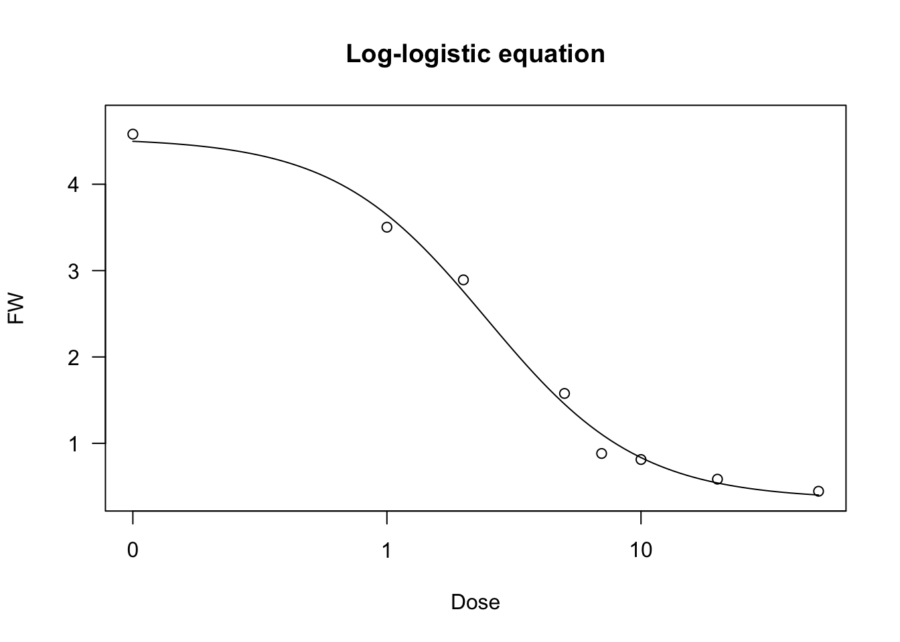
The type 1 Weibull curve is for the alternative Gompertz curve what the log-logistic curve is for the logistic curve. The equation is as follows:
\[ Y = c + (d - c) \left\{ 1 - \exp \left\{- \exp \left[ b \, (log(X) - log(e)) \right] \right\} \right\}\]
The parameters have the very same meaning as the other sygmoidal curves given above.
As for fitting, the ‘drc’ package contains the self-starting functions ‘W1.2()’, ‘W1.3()’ and ‘W1.4()’ that can be used to fit respectively the two-, three- and four-parameter type 1 Weibull functions.
The type 2 Weibull curve is for the Gompertz curve what the log-logistic curve is for the logistic curve. The equation is as follows:
\[ Y = c + (d - c) \exp \left\{- \exp \left[ b \, (log(X) - log(e)) \right] \right\} \]
The parameters have the very same meaning as the other sygmoidal curves given above.
The ‘drc’ package contains the self-starting functions ‘W2.2()’, ‘W2.3()’ and ‘W2.4()’ that can be used to fit respectively the two-, three- and four-parameter type 2 Weibull functions.
We will fit these Weibull curves to the ‘brassica’ dataset.
model <- drm(FW ~ Dose, fct = W1.4(), data = brassica)
model2 <- drm(FW ~ Dose, fct = W2.4(), data = brassica)
plot(model, main = "Weibull functions")
plot(model2, add=T, col = "red")
legend(0.1, 3, legend = c("Type 1", "Type 2"),
lty = c(1,1), col = c("black", "red"))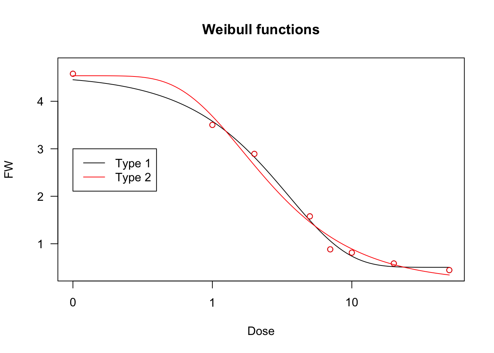